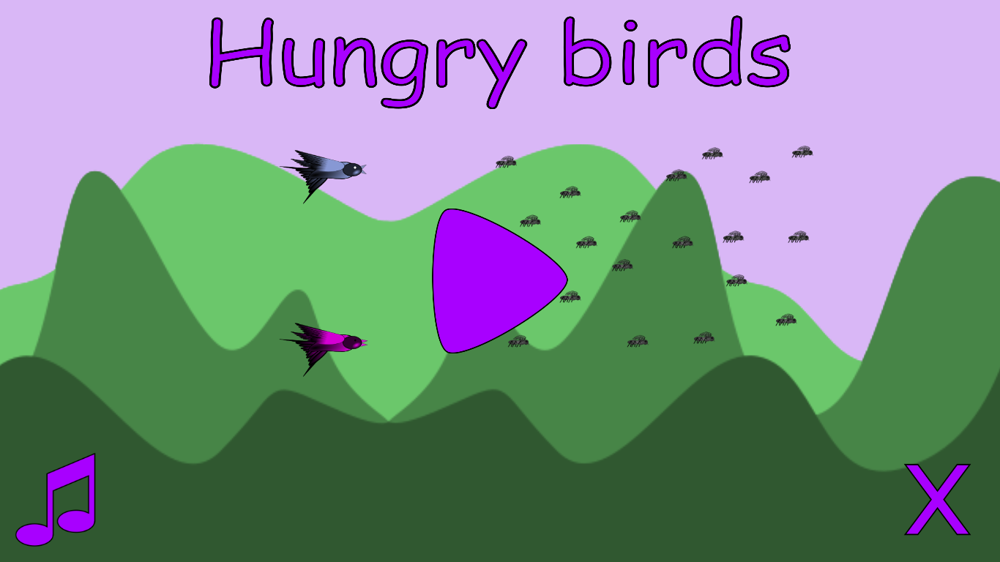
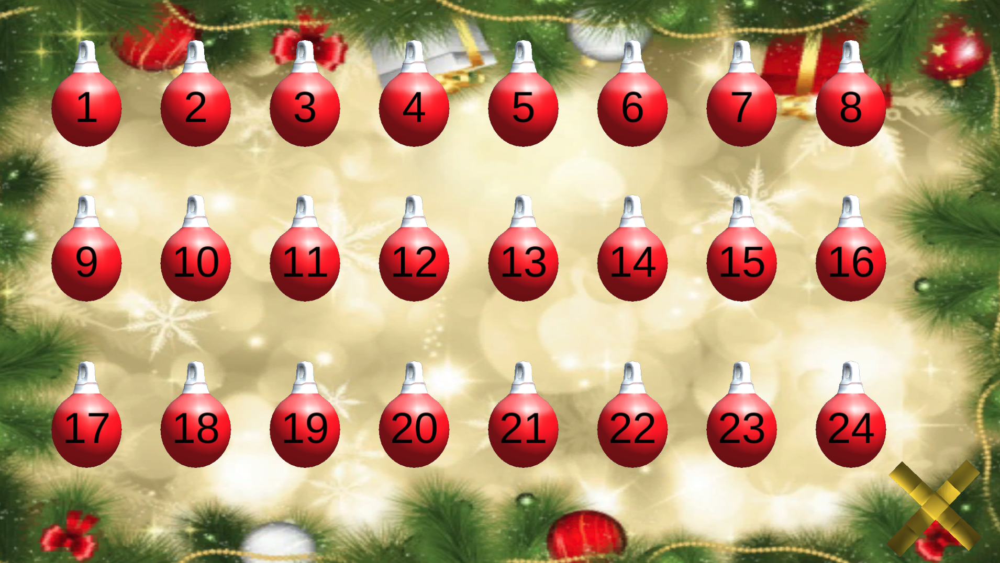
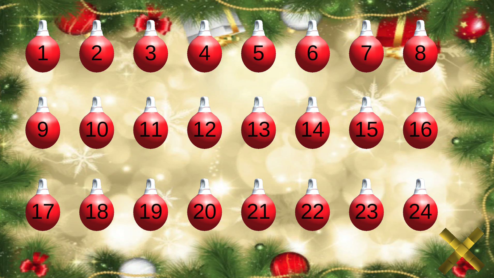

Welcome to my personal web! ☺
I am a Software Developer, who is about to finish Master's degree studies in the field of
Artificial Intelligence at Charles University in Prague. This web summarizes basic professional information about me
and also contains the links to my open-source work and the ways to contact me. Enjoy and do not hesitate to let me know
about any questions that bothers you about me or this web.
Structured CV in this PDF.
Education
Master in Artificial Intelligence at Charles University in
Prague. (started in October 2016, expected graduation in June 2018)
Bachelor in Computer Science at Charles University in Prague.
(started in October 2013, graduated in September 2016)
Spent a semester at University of Padua as an Erasmus student.
(from March 2017 to July 2017)
Work experience
C# developer at Eplan Solutions from August 2016 to February 2017.
Implemented new features and fixed bugs in a program dedicated to model
and design the wire harnesses in 3D environment. Team Foundation Server
was used as a tracking system.
Junior Java developer at Unicorn Solutions from July 2015 to September 2015.
Participated in development of internal Information System.
Open-source portfolio
Fruitons is an online multiplayer turn-based game that was
created for a university subject called Software Project. The program
was created by the team of 4 people I lead. All the projects are available
at our Bitbucket,
the game itself has its own
website.
As for the programming languages, there were used C# (in Unity3D), Haxe and
Java. For the efficient build process, Tomcat, Artifactory and Bamboo were used and
as a tracking system there was Jira.
Heist (in progress) is how I call the program for my Master's thesis. It's
purpose is to enable modeling environments of security objects and to create
artificial burglars that try to rob the valuable things inside them.
It is able to move inside the modeled environment as a security guard and detect the burglars.
The target user of the application is a security guards trainer that would
model the desired environment and train his trainees using the program. Source
code is available at my Github.
It is written developed in C# using Unity3D.
Other public projects I created are available on my
Github
as well. There is a Java server
for Android client,
forming shared economy cooking application. In addition, Github contains my
Bachelor thesis,
Artificial Intelligence for Hearthstone in Python. Remaining two projects,
Hungry birds and
Lopt, are both small games
written in Unity3D.
Technical skills summary
Highly skilled in C#, Java and Python on both commercial and university levels.
University experience with Haxe, C++, Pascal, MAtlab, XML technologies, HTML,
CSS, SQL, UML, Haskell, Prolog, Artifactory, Bamboo and Tomcat.
Knowledgeable in Ruby, Javascript, JQuery, Bootstrap, CSS, Mongo DB.
Familiar with Windows, Linux, Android, TCP/IP.
Team skills
SCRUM, JIRA, TFS, Git, Slack.
Programming motto
It is much harder and much more important to learn how to
think analytically than to know all the current technologies.
That technologies will be out-of-date in a few years, the mind
that can think analytically will adapt and will never be out-of-date.
Here are some games I created. Have fun! 🎮

 

My publicly shared work can be found on Github,
there is my LinkedIn for professional communication
and Facebook for less formal messaging.